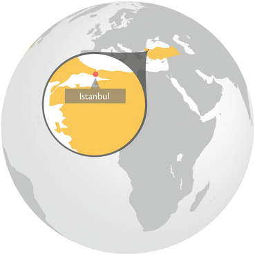
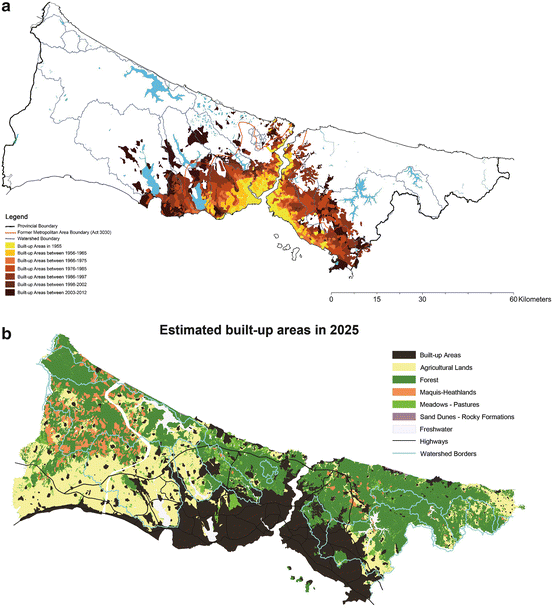
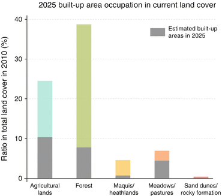

Key Findings
- Although at a slower pace than in the past decades, the population of İstanbul will continue to grow due to immigration, and the provisioning of freshwater will continue to be of critical concern for the foreseeable future.
- Most of the biodiversity-rich areas are lacking formal protected status.
- While the metropolitan government is cognizant of environmental problems of the city, biodiversity and ecosystem services are not integrated into its spatial and strategic plans.
- Ömerli Watershed, providing most of the drinking water of İstanbul, has the highest ratio of illegal urban development among all the other basins in the city’s boundaries that provide freshwater.
- The Urban Biosphere Initiative may provide a rational approach for the integrated use and protection of ecological assets in the Ömerli Watershed.
16.1 Geography and Historical Background
İstanbul, a world heritage site straddling two continents at a strategic location, has been the capital of four empires uninterrupted for almost 1,600 years from AD 330 to AD 1923 (Necipoğlu 2010). The city also lies astride on the seaway between the Black Sea to the north and the Marmara Sea to the south. Both European and Asian sides of the city have hilly topography with the highest point being Aydos Hill on the Asian side (537 m). İstanbul’s climate is broadly characterized as warm-summer Mediterranean but includes many microclimatic variations. The city’s location, several climatic zones, diverse geo-spatial characteristics, and long history of human settlement, have all contributed to the area’s rich biological diversity. The location and climate make the region a crucial crossroads of migration routes, supporting seasonal movement of many species (Yaltırık et al. 1997).
The earliest human settlements have been dated to 8,000 years ago, which suggests that this area (Thrace and Anatolia Peninsulas of İstanbul Province) was one of the major migration routes of humans in Paleolithic periods (Özdoğan 2010). The city came to be known as Constantinople (“the city of Constantine”) after the Roman Emperor Constantine who, in AD 330, proclaimed the city the sole capital of the whole Roman Empire. After AD 395, it remained as the capital of the Eastern Roman (eventually known as Byzantine) Empire. For the better part of the Middle Ages, Constantinople was the largest and wealthiest city on the European continent, and at times even the largest in the world (Chandler 1984; Modelski 2003). In 1453 the city became the capital of the Ottoman Empire and, already by the end of the fifteenth century, its population reached two hundred thousand, making it the second largest city in Europe. Together with the weakening of the Ottoman Empire, however, the city gradually lost its importance in a process that proceeded well into the twentieth century.
16.2 İstanbul’s Transformation from the Mid-1900s
Starting in the late 1940s and early 1950s, İstanbul has undergone great changes. From 1955 to present, İstanbul’s population and built-up area have grown rapidly. Throughout the city, new public squares, boulevards, and avenues were constructed or existing ones revamped (Gül 2009). Also, as a response to social, cultural, and economic changes across the country, migrants mostly from rural Anatolia started flowing to the city. Especially after the 1970s, the population of the city rapidly increased following the prospect of finding jobs in the booming metropolis and the promise of a better life than what the rural livelihoods had to offer (Tümertekin 2007) (Fig. 16.1).
In spite of the major demographic shifts in the late 1950s and 1960s, far too few investments in planned mass housing projects were made to meet the demand. The early squatter areas (gecekondu in Turkish, meaning ‘built overnight’) emerged as a consequence of urgent housing needs and the lack of the ability of the government to supply social housing for low and middle-income households. Since then, this uncontrolled rapid development has been creating a heterogeneous and scattered urban fabric. The resulting environmental and socio-economic problems have led to several administrative challenges (Tezer 2004; Erkök 2009).
While the laws and regulations are in place to protect the forests and basins, the enforcement is often lacking. More disconcerting is that the illegal residential settlements in these ecologically sensitive areas are tolerated and legalized with political motives (Bekiroğlu and Eker 2011). Several amnesty laws were issued in the past to legalize illegal settlements (Uzun et al. 2010). Rather than preventing the construction of new illegal settlements, the expectation of upcoming amnesty laws further encouraged illegal and unplanned developments on the outskirts of the city throughout the 1980s. Furthermore, the illegal or unplanned developments in the recent decades are no longer driven by a shortage of housing and they are now more speculative in nature. More importantly, these developments are increasingly within the watersheds that are critical for the water provisioning to the city (Tezer et al. 2011). In a parallel process, gated communities sprung up across the forested hills of the scenic Bosphorus as well as in outlying areas around the city while high-rises (both commercial and residential) mushroomed in more central locations. The population increase, the densification of the city centre and the strengthened commercial profile of the city paved the way for it to eventually aspire to be a “Global City” of the twenty-first century (Keyder 1999).
The costs of the development are many, including erosion of the traditional İstanbul culture, with its vernacular architecture, and the loss or dwindling of biodiversity and ecosystem services in and around the urban areas (Keyder 1999; Tezer 2005; Tezer et al. 2008). The rapid expansion since the 1980s of new settlements into the forests and water basins north of the city threatens one of the most critical ecosystem services that the city depends upon: the provision of freshwater. Today, İstanbul is home to more than 13 million people (65 % on the European side; 35 % on the Asian side), about 18 % of the national population, and contributes more than one fifth of Turkey’s GDP, that is approximately US$150 billion (TurkStat 2012). While the last two population censuses indicate that the rate of population increase has been slowing down to 3 % annually, the absolute population growth is still high enough to continue to affect changes in urban structure and place significant pressure on natural resources.
16.3 Governance and Institutions
The İstanbul Province has a governor (vali) that is appointed by the central government in the capital Ankara. This provincial government used to be the main urban administration body with numerous district municipalities having limited responsibilities within their own jurisdictions. In the early 1980s, when metropolitan municipalities were established as the country’s largest urban settlements, most of the responsibilities of the provincial governments were transferred to these new local authorities. Since 1984, İstanbul has a metropolitan municipality whose mayor is elected by the citizens of İstanbul for five-year terms. However, the delegation of power from Ankara to local governments did not result in a true civil engagement in urban governance in İstanbul. An opaque management structure is still prevalent in local municipalities, which permits frequent misuse of political power (Tekeli 2009).
The management of ecosystem services has been plagued with poor coordination among the multiple responsible authorities. The fragmented governance structure and the complicated legal system are major problems particularly in the management of water resources for İstanbul that experiences chronic water shortages. For example, even though drinking water and sewage services are responsibilities of the İstanbul Water and Sewage Works (İstanbul Su ve Kanalizasyon İşleri, İSKİ) of the İstanbul Metropolitan Municipality, the management of forests within the administrative boundaries of İstanbul falls under the responsibility of the İstanbul Forest District Directorate. The Directorate is ultimately tied to the Ministry of Forestry and Water Works and thus to the central government. For the forested areas around the city, in general, the primary objective remains to be timber production. Water provision is a lesser objective along with recreation and wildlife protection (Bekiroğlu and Eker 2011). Moreover, the city is increasingly relying on water sources that are located further from the city itself, and are therefore under the auspices of other governance bodies such as State Hydraulic Works (Devlet Su İşleri, DSİ) or local municipalities.
To alleviate the operational and legal difficulties of bringing water from sources beyond the city’s boundaries, the authorization of İSKİ has recently been extended to management of the lakes, dams, and other water infrastructure beyond the city’s administrative boundaries. On the other hand, in Turkey, the General Directorate of Forestry sets aside those areas that are critical for clean water provision as protected lands, which are under the purview of the General Directorate of Nature Conservation and National Parks. While by law, these organizations should cooperate in their operations, there is little coordination among them (Bekiroğlu and Eker 2011).
With the rising popularity of concepts such as “ecosystem services” and “natural capital”, the forests of İstanbul have taken on a renewed meaning in the eyes of the planners, city officials, and concerned citizens as tangible and intangible assets of the city. In this vein, a promising initiative is the Urban Biosphere Reserve (UBR) approach (Tezer 2005). The initiative envisions an integrative policy instrument targeting the sustainable management of urban aquatic habitat within the Ömerli Watershed, a critical source in helping meet the drinking water demand of the city (see Sect. 16.5). Such novel governance approaches in urban administration can be critical in ensuring preservation of ecosystem services and conservation of biodiversity in the face of relentless urban development. This in turn would help ensure that rapidly growing urban areas would not choke themselves off by cutting off their life-support systems.
There is an active civil society in İstanbul on matters relating to the conservation of biodiversity and ecosystem services. It would, however, be hard to claim that a majority or even a substantial portion of the city’s inhabitants are genuinely concerned about such issues related to the long-term wellbeing of the city. Based on surveys commissioned by the Urban Age Programme, a network of researchers from various research institutions around the world, while İstanbul residents seem to be concerned about environmental problems more than those in, for example, London or São Paulo, climate-related ones such as water shortages and heat waves rank the highest (Page et al. 2010). Impacts on biodiversity ranks a distant 11th in a list of 18 environmental concerns directed at survey participants from İstanbul. Only 33 % of participants identified this as a primary environmental concern. This is perhaps not unexpected for a city that has always faced water shortages in its history. Obviously, the impacts of water shortages and heat waves are much more visible to İstanbulites compared to the contribution of biodiversity to their well-being.
Among the civil society organizations in Turkey that place ecosystem services and biodiversity to the top of their agenda is the Turkish Society for the Protection of Nature (Doğal Hayatı Koruma Derneği, DHKD). The DHKD has in the past conducted research on sensitive areas of İstanbul that are important for conservation of biodiversity (DHKD 1999; Byfield et al. 2010). It also used to be actively involved in initiating or furthering the protected statuses of these areas. Likewise, Doğa Derneği (Nature Society), founded in 2006, pursues much the same goals as the DHKD.
16.4 Current State of Biodiversity and Ecosystem Services in İstanbul
İstanbul, while famous with its cultural heritage, is not as well known for its natural heritage and the richness of its biodiversity. The unique geographic location and diversity of natural characteristics can be classified into five different natural habitats (Table 16.1, DHKD 1999). In İstanbul, there are almost 2,500 native-vascular floristic and fern species (Byfield et al. 2010). There are seven Important Plant Areas (IPAs) and four Important Bird Areas (IBAs) (Byfield et al. 2010; Magnin and Yarar 1997). These areas are also collectively labeled as Key Biodiversity Areas, KBAs (Eken et al. 2006). Large portions of these IBAs and IPAs are unprotected and under intense pressure from urban expansion (Byfield et al. 2010). Only limited protection is afforded to those sections that have “natural site” designations such as those located within the Bosphorus Forefront Area, watershed protection zones, and nature parks.
Table 16.1
Nationally and globally important habitats in İstanbul
Habitats | Existing threats and damage |
|---|---|
Grasslands
| |
Once, southern parts of the European side of İstanbul were covered completely with rich floristic species of limestone grasslands. However, most were either lost to rapid urbanization or converted to cropland (wheat and sunflower). There are still some remnant grasslands which accommodate rich endemic species of flora and fauna. | It is the most degraded habitat in the province. It is estimated that less than 10 % of the initial grasslands preserve their natural characteristics at present. |
Forests
| |
They represent the largest natural habitats. İstanbul’s forests are very rich with floristic species and they form the western terminus temperate rainforests along the southern coast of the Black Sea. The majority of İstanbul’s forests are used for firewood and fire-coal extraction according to the strict regulations of the Ministry of Forestry. Forests still constitute the largest land cover in the province (almost half of the total area). | Vulnerable to wildfires. Moreover, illegal and unplanned development and agricultural land expansion are two other major threats. The planned third bridge crossing on the Bosphorus and its connecting highways on both sides of İstanbul may also cause serious degradation. |
Heathlands
| |
Once, the southeast part of the Asian side was covered with large heathlands (Ericaceae) (estimated 95,000 ha). Although they are extensively damaged, they still accommodate the most diverse rare and endangered species. İstanbul’s heathlands represent the largest and the most intact remnant habitat of this kind in the eastern European and Mediterranean regions. | The majority of the habitat in urban areas is degraded today. The major threats to these habitats are the pressures originated by urban development, agricultural expansion, and poorly devised afforestation efforts carried out without proper ecological evaluations. |
Coastal Dunes and Habitats
| |
The coastal dunes of İstanbul come second after the heathlands in terms of having the most diverse rare and endangered species. The most important are located in 15 different locations along the Black Sea coast of İstanbul. | In the past, the total area of coastal dunes along the Black Sea coast of İstanbul was more than 5,600 ha. However, more than half of these habitats have been destroyed since the 1960s. Urban development and construction of highways caused serious degradation and loss of the coastal dunes along the Marmara Sea coast. Mining and residential development remain to be the major threats for this habitat. |
Wetlands
| |
Büyükçekmece, Küçükçekmece, and Terkos lakes on the European side; Riva and Ağva streams on the Asian side are the important wetlands of İstanbul. They all have rich aquatic habitats. Terkos wetlands in particular have the most diverse aquatic habitat in Turkey. | Terkos, Büyükçekmece, and Riva are used to supply drinking water. Hence, they are better protected under the regulations of the İSKİ. However, Küçükçekmece’s wetlands are under the threat of agricultural and industrial expansion as well as residential development. Moreover, the third International Airport may have serious impact on the water quality, should it be built within the Terkos Watershed as planned. |
İstanbul, located on one of the major bird migration routes, is home to four IBAs. However, two of these IBAs, the Büyükçekmece and Küçükçekmece Lakes, once popular hunting spots, have already been extensively urbanized (Magnin and Yarar 1997). The region is also home to flora that is threatened with either local or global extinction. Two hundred and seventy of these plants are in the national list of threatened rare and endemic plants (Avcı 2008). One of these IPAs is the Ömerli Watershed, which does not only harbor many endemic or endangered plant species but also provide a vital ecosystem function as a freshwater resource (Tezer 2005). Although the Ömerli Watershed is not originally categorized among the IBAs of İstanbul, its location is nevertheless very significant for bird abundance: after the construction of the reservoir it has gradually become home for more than 100 bird species (Tezer et al. 2011).
Open-pit coal mining and quarries along the Black Sea shores of the city supplied, until recently, part of the city’s demand for fossil fuel and construction material. These mining operations, long practiced in the region, especially along the Kilyos-Terkos coastal strip destroyed coastal dune habitats that are critical for many endemic species (Byfield and Özhatay 1995). In part due to coal mining, and in part due to the expansion of residential areas, the coastal habitat decreased from about 450 ha in early 1980s to about 155 ha in early 2000s along the Kilyos-Terkos coastal strip (Doğru et al. 2006).
With its centuries-long history as an imperial center, the city houses many exotic species brought from various places around the world. Some of these such as magnolia (Magnolia grandiflora) native to the southeastern U.S. and horsechestnut (Aesculus hippocastanum), native to the northern Greece have long been familiar elements of the İstanbul cityscape as well as its cultural fabric (Yaltırık et al. 1997; Lack 2000). On the other hand, one of the most well-established invasive species is the tree of heaven (Ailanthus altissima) from China that grow in derelict areas around the city, near highways and railroad tracks as well as parks (Avcı 2008).
Parks and gardens scattered around İstanbul are mostly remnants of imperial woods and gardens. These gardens and parks harbor an impressive biodiversity in İstanbul populated by both native and exotic species collected over millennia. They also perform an important function as green spaces for which İstanbul, once famous for its gardens, is sadly lacking (Kara and Demirci 2010). Cemeteries, historically an important part of the urban fabric of the city, changed little as the city transformed and expanded around them; these cemeteries provide refuge to native terrestrial gastropods (Örstan and Kösemen 2009) and potentially to many floristic species as well. Prince Islands, within the administrative boundaries of İstanbul, have so many exotic tree species that they are said to have become arboretums in their own right (Yaltırık et al. 1993).
The Marmara Sea, the Black Sea, the Bosphorus strait, and the inlet Golden Horn as well as the nearby freshwater bodies all used to harbor rich aquatic biodiversity. Especially during the twentieth century, increased urbanization brought with it an increase in maritime traffic, the discharge of untreated effluents (i.e., sewage from the residential areas and wastewater discharge from the industrial facilities), and overfishing. All these factors played their role in decimating the once abundant aquatic life in these water bodies (Avcı 2008). Thanks to the significant improvements in treating the effluents and a massive rehabilitation effort, the Golden Horn regained some of its former aquatic biodiversity (Yüksek et al. 2006). However, its recovery will probably remain incomplete because the water quality in the estuary is influenced by the Black Sea and the Marmara Sea whose aquatic biodiversity has been severely degraded and remain so due to effluents from the urban areas (Uysal et al. 2002; Albayrak et al. 2006). Importantly, the provision of seafood, a critical ecosystem service these water bodies had been providing to İstanbulites for ages, is now severely degraded (Turkish Ministry of Environment 2002).
In addition to the vulnerability of the city to destructive earthquakes, the other major environmental concern in İstanbul has historically been the persistent challenge of securing water needs of its inhabitants. The region lacks large freshwater sources and provisioning of sufficient water to the city has been a persistent problem throughout the ages (Crow 2012; Çeçen 1992). The forests north of the city have been crucial since the Roman times in provisioning of the drinking water to the inhabitants of the city. This historical challenge continues today as the city’s drinking water deficit has kept on increasing even though the supply has more than doubled over a 15-year period (Table 16.2). At the same time, especially since 1980s, the forests and water basins north of the city have been experiencing considerable degradation due to urban expansion. This expansion not only further reduces what little habitat had been left to support native biodiversity but also degrades the water-provisioning capacity of those areas.
Table 16.2
Drinking water supply–demand and deficit of İstanbul
Year | Population | Demand (106 m3/year) | Supply (106 m3/year) | Deficit (106 m3/year) |
|---|---|---|---|---|
1995 | 8,417,000 | 771.0 | 451.0 | 320.0 |
2000 | 10,019,000 | 939.0 | 757.0 | 182.0 |
2005 | 11,332,000 | 1,298.0 | 762.0 | 536.0 |
2010 | 12,915,000 | 1,635.5 | 952.5 | 682.0 |
Of the seven major watersheds that have historically supplied more than three quarters of the city’s drinking water use, Küçükçekmece Lake has been seriously contaminated as a result of intense urbanization in its basin; thus, it is no longer a source of drinking water (Kucukmehmetoglu and Geymen 2008). The other two freshwater basins, Alibeyköy and Elmalı have also lost much of their capacity due to similar concerns with contamination from urban effluents (Tezer 2005). Even the least degraded Darlık basin suffers from illegal constructions that now occupy about 10 % of the basin (Bekiroğlu and Eker 2011). Lately, the plans for the third bridge and the connecting highways (Northern Marmara Highway) to cross through forests and watersheds are causing much controversy. Another controversial plan is the construction of the third International Airport within the Terkos Watershed. In a prime example of top-down decision-making, these two significant development projects are planned under the authority of the Central Government in Ankara.
16.5 Case Study: The Ömerli Watershed1
The Ömerli Watershed (ÖW) covers an area of 621 km2 and spreads across two provinces, İstanbul and Kocaeli. Almost 71 % of its land area is in İstanbul (Fig. 16.2). It is the most important of the seven watersheds that provide drinking water to İstanbul and it has exceptional biodiversity (Albayrak 2012). As the second largest drinking water source for İstanbul, it supplies about half of the drinking water demand of the city (Albay and Akçaalan 2003). However, among all watersheds that provide drinking water to the city, the ÖW also faces the most acute pressures of unplanned urbanization (Tezer 2005).
The ÖW had a rural character until the 1970s; especially during the 1980s, it experienced rapid population increase due to immigration. The watershed’s population was 24,000 in 1980; it increased by 540 % to 154,000 by 1990, then by 140 % from 1990 to 2000 to 371,000 (Baykal et al. 2003). According to the İSKİ, the population in 2005 was 394,208. Notwithstanding these estimates, it is difficult to determine the exact population of the watershed because of the incompatibility of administrative and watershed boundaries.
The ÖW has been classified as one of the “122 Important Plant Areas (IPA) of Turkey” in a study of the DHKD, as it contains at least 37 rare plants and extraordinary biodiversity (Byfield et al. 2010). However, despite the IPA designation, the area is not formally protected. The only tool to control urbanization is the watershed buffer zones that were established by the İSKİ Regulation, with the aim to keep development away from the dam reservoir to protect the water quality. The sole criterion for their establishment is the distance from the reservoir, without regards to the ecological characteristics of the watershed. There are four such zones from nearest to farthest from the reservoir: absolute, short-distance, intermediate-distance, and long-distance (Tezer 2005).
16.5.1 Land Use and Ecology
The ÖW has a very rich habitat mosaic comprised of wetlands, heathlands, natural and planted coniferous forests, deciduous forests, meadows and peatlands, and a dam reservoir which was constructed between 1968 and 1972. Before the construction of the Ömerli Dam, the southern areas of the watershed were mainly agricultural lands and the northern parts were generally oak-coppice forests and heathlands (Suher 1963).
The watershed’s heathlands are part of the extensive heathlands located on the Kocaeli Peninsula. These heathlands are the largest remnants of their kind across southeastern Europe and the eastern Mediterranean region. Heathlands are rare habitats that exist in humid and temperate regions with acidic soils. They provide a valuable biological diversity of rare birds and plant species, insects (butterflies, oxybelus, coleoptera, etc.), reptiles, and amphibians (Byfield et al. 2010). The forests represent the largest type of land cover in the watershed (63 % of the basin in 2006). Forest areas have been identified as sensitive areas, and consist of oak-coppice forests of Thrace region and black-pine forests. They also contain many rare species such as Cirsium polycephalum, Lathyrus undulatus, Cyclamen coum var.coum, Galanthus plicatus subsp. byzantinus, Lilium martagon and Osmunda regalis (Özhatay and Keskin 2007; Tezer et al. 2008). In the category of water resources and wetlands, the watershed consists of the dam reservoir, the streams nourishing the dam reservoir and wetlands, seasonal ponds and peatlands (Özhatay and Keskin 2007). Agricultural areas expanding on the southeastern part of the watershed are grouped as irrigated, not-irrigated, greenhouse, and other agricultural areas.
In 2000, the watershed area consisted of 51 % forest, 35 % agricultural land and meadows, 10 % settlements and industrial uses, and 4 % water surfaces (Baykal et al. 2003). Another survey found that in that same year, the watershed contained 3,082 ha of residential land, 177 ha of commercial land and 352 ha of industrial land (İlze and Kurt 2003). The industrial areas were located in all four protection zones of the watershed, with strong negative impact on its biological diversity, soil, water and hydrogeological quality (İlze and Kurt 2003; Hürfikir 1994).
There has been significant changes in land use and land cover in the watershed between 1987 and 2006 (Fig. 16.2). Natural areas covered primarily by heathlands and woodlands decreased by 5,000 ha between 1987 and 2006, from 46,000 ha to about 41,000 ha. At the same time, agricultural areas declined by 82 % while built-up areas increased by 169 %. For example, the urban land in the Sultanbeyli District rapidly expanded within the long-distance protection zone around the reservoir and today extends over 3,000 ha with a population of over 282,000 people. The district is unique in İstanbul due to its predominantly illegal urbanization within its boundaries, which has been on-going for decades and directly causes severe degradation of the area’s ecology. One notable example was in 1987, when 1,350 ha of state-owned forested area had its status as “forest land” removed by the Directorate of İstanbul Environment and Forestry Department, due to the degradation caused by illegal urban expansion. Although the urban expansion in the district has slowed down in recent years, such actions still encourage further degradation of the forested areas (Özyetgin-Altun 2011).
Land use changes including unplanned residential development, road construction, and construction of the Formula 1 racetrack contributed to ecosystem changes in the basin. Pollution from residential, industrial, and agricultural areas is also an important factor. The changes typically result in fragmentation and degradation of habitats that accommodate rich biodiversity as well as degradation of water and soil quality. The reservoir in particular has been polluted by sewage, industrial wastewater, and soil run-off. The increase in pollution in the reservoir has been shown to lead to frequent toxic blue-green algae blooms from late summer to mid autumn (Albay and Akçaalan 2003).
The first Environmental Master Plan for the ÖW was prepared in 1984 to control the impact of rapid illegal urbanization. The plan identified watershed protection zones around the reservoir and defined spatial development conditions accordingly. This protection zone approach in the watershed was sustained in the 1995 Metropolitan Master Plan; especially any new construction was banned within the absolute protection zone around the Ömerli reservoir and its connecting streams.
16.5.2 Recommendations
An ecological-asset evaluation of the ÖW was carried out with the aim to develop an ecosystem services-based spatial decision making framework. This research was informed by the input from the relevant stakeholders and an ecosystem services-based spatial zoning has been developed to guide the watershed management (Albayrak 2012). The zoning approach is in line with UNESCO’s biosphere reserve program to control carrying capacity of the ecosystems and sustain ecosystem services. Thus, in the determination of the spatial zoning for the ÖW, both its biodiversity and socio-economic characteristics in the watershed were taken into consideration.
The ÖW already has protection zones put in place according to the regulations of the İSKİ, for which the distance from the reservoir is the sole criterion. However, distance-based watershed management regulation is no longer seen as adequate to maintain the integrity of the ecosystems and thus preserve ecosystem services (MEA 2005). Identification of ecologically sensitive areas in the case of the ÖW can be the basis for development of a watershed management model that reflects the local ecosystem characteristics (Fig. 16.3). Ecologically Sensitive Areas (ESA) as identified in the evaluation are: Water surfaces and wetlands (ESA-1), areas of rare and endemic plants (ESA-2), heathlands (ESA-3), sensitive forest areas (ESA-4), ground water reserves (ESA-5), and grasslands (ESA-6). The water quality, which is directly related to the quality of the natural environment, can only be maintained by ensuring the well-being of these ESAs. The existing protection zones must be modified in accordance to these ESAs.
16.6 Concluding Remarks
İstanbul’s metropolitan area population is projected to be 14.6 million by 2017 and 16.6 million by 2023 (TurkStat 2012), which is slightly above the 16 million cap placed on the city’s population for 2023 in the İstanbul Environmental Master Plan on sustainability grounds (İMP 2009). To accommodate the increase in population, the city will mainly either expand or grow denser, although the population density of the city is already one of the highest in all Europe (Urban Age 2009). Furthermore, the city will continue its economic boom for the foreseeable future led by the growth in its commercial and service sectors. To the extent the growth of the city is accommodated through expansion, more of the natural areas and critical watersheds will come under pressure of urban expansion (Terzi and Bölen 2012).
The 2006 Environmental Master Plan of İstanbul and its revision in 2009 failed to identify effective solutions in regard to illegal urbanization, degraded forests, biodiversity conservation, and ecosystem services and the sustainable use of natural resources. Although, for the first time in the master planning tradition of İstanbul, “significant biodiversity areas” were specifically identified at least in the plan, the identified areas represented only a portion of the actual extents of the biodiversity hotspots of İstanbul (Byfield et al. 2010; Özhatay and Keskin 2007; Tezer et al. 2008).
İstanbul Metropolitan Municipality, cognizant of the implications, has prepared two successive strategic plans for the city, the latest for 2010–2014. While the strategic plan acknowledges the importance of environmental sustainability together with social and economic sustainability, the emphasis regarding the environmental sustainability seems to be almost exclusively on the “fight against global warming” and “adaptation to climate change” (İMM 2010, p. 10). Under the “Environmental Services Management” section, improving environmental protection practices, extending green zones, and developing practices for prevention of marine pollution are listed. There is reference to the natural heritage of the city, in vague terms, and several areas are –though irrespective of the IPA and IBA designations and limited in extent– indicated as biodiversity hotspots in the plan. However, it is notable that neither biodiversity nor ecosystem services are mentioned in the plan report. In general, while the report acknowledges environmental problems and needed initiatives, it is lacking a functional understanding of the importance of biodiversity and ecosystem services for the well-being of the city’s inhabitants.
The prospects of biodiversity and ecosystem services in and near İstanbul’s urban areas do not look promising in the face of projected changes in the demographic and economic structure of the city. For example, the proposed third bridge over the Bosphorus is a point of contention. The proposal is questioned on its soundness from urban and transportation planning perspectives (Geymen 2013; CUP 2010; Kubat et al. 2007; Tezer 2004). In particular, the induced urbanization around the new transportation infrastructure accompanying the bridge would increase the urbanization pressure on the northern forests and watersheds. Another example that puts the future environmental sustainability of the city in question is the Canal İstanbul project. The ambitious project is part of a grandiose vision of İstanbul and targeted to be completed in 2023. It aims to divert the maritime traffic that now crowd the Bosphorus by building a canal on the European side about 45 km from the Bosphorus as an alternative sea route between Black Sea and the Marmara Sea (Fig. 16.4b). However, aside from its expensive price tag, the various implications of the project on ecosystems and biodiversity are far from certain (Kundak and Baypinar 2011). There is also a rough blueprint for two new cities along the Black Sea coast that are supposed to relieve the population pressure away from the central metropolitan areas of İstanbul. The problem with such a strategy is that it would simply extent the metropolitan area well along the Black sea coast, decimating in the process the coastal and forest ecosystems, some of which are important conservation sites and important freshwater sources for the city (Şekercioğlu et al. 2011). All these developments will most likely speed up the degradation, fragmentation, and loss of the forests and the other key habitats in İstanbul (Figs. 16.4b and 16.5; Table 16.3; Tezer et al. 2012).

Fig. 16.4
(a) Urban expansion in the watersheds of İstanbul Province 1955–2012 (Source data from Tezer Kemer 2005, prepared by and published with kind permission of ©Azime Tezer 2013. All Rights Reserved). (b) The projected changes in land cover by 2025 assuming all planned development projects are realized (Modified from Tezer et al. 2012, and published with kind permission of ©Azime Tezer 2013. All Rights Reserved)

Fig. 16.5
The projected expansion of built-up areas by land cover category in 2025 assuming all speculated development projects are realized (see also Fig. 16.4b) (Prepared by and published with kind permission of ©Azime Tezer 2013. All Rights Reserved)
Table 16.3
Percentage of land cover of key habitats and built-up areas in İstanbul in 2010 and in 2025
Land use/cover category | Land use/cover ratio (%) | % of remaining key habitats in 2025 | |
|---|---|---|---|
2010 | 2025 | ||
Built-up | 23 | 46 | – |
Agriculture | 24 | 14 | 58 |
Forest | 39 | 31 | 80 |
Maquis-heathlands | 5 | 4 | 86 |
Pastures-meadows | 7 | 3 | 37 |
Sand dunes-rocky formations | 0.28 | 0.22 | 78 |
Freshwater | 2 | 2 | 100 |
The master plans for the İstanbul Province have a history of protecting the forests and watershed areas to the north of the city from development. In particular, the plan prepared in the late 1950s proposed urban development in a linear form along the east–west axis not to encourage the development to expand through the sensitive northern habitats and natural resource areas. Though imperfectly implemented, this policy was continued in the later plans until the most recent Environmental Master Plan. The planned developments if realized would mean a definite move away from the basic urban development policy of İstanbul that always safeguarded the areas that have been critical for the provisioning of water but also have increasingly been recognized for their value for conservation of biodiversity.
Postscript
Late May and early June of 2013 witnessed wide-spread public protests in İstanbul’s Taksim Square area and Gezi Park. The protests were triggered by the heavy-handed response of the Central Government to objections by locals to the planned “development” of the park near Taksim Square.
The park is located at the heart of the most vibrant neighborhood of the city, has a diverse and rich cultural fabric, and is frequented by citizens and tourists from all walks of life. It is also one of the few green spaces in İstanbul’s Central Business District (CBD). In yet another example of top-down decision-making (see Sect. 16.4), the Central Government had decided to virtually eradicate the park and instead turn the area into a built-up environment with a project that would include constructing a replica of a military barracks that was demolished some 70 years ago (Fuhrmann 2013; Occupytaksim 2013). The intention was supposedly to use the building mainly as a shopping mall and a residence-hotel-museum complex.
The city has already only 1 m2 of green space per person within its central built-up area (Urban Age 2009). Therefore, there is no justification to replace the park with a replica of a building that has no particular historical or architectural importance, especially in the absence of sufficient supporting documentation of the original barracks to guide the reconstruction process. However, in spite of persistent objections from various stakeholders and planning professionals, the Central Government insisted to go ahead with the project (Yıldırım 2012; Docomomo Turkey 2013; ICOMOS 2013). There is widespread consensus among the public that this insistence reflects a number of disconcerting factors, one of the most important being the absence of proper public deliberation on planning decisions (Occupytaksim 2013).
On July 3, 2013, it was revealed that a court had actually cancelled the project back in June 6. The declaration of this ruling was apparently delayed for procedural reasons. The ruling, in principal, precludes the Central Government’s earlier decision of holding a plebiscite on whether to go ahead with the planned project, which is highly contested. Still, what the future holds for Gezi Park remains to be seen. From a broader perspective, the massive protests in İstanbul may be a step to force the Metropolitan Municipality to adopt a governance style that is more transparent and more participatory. #direngezi
References
Albay, M., & Akçaalan, R. (2003). Factors influencing the phytoplankton steady state assemblages in a drinking-water reservoir (Ömerli reservoir, İstanbul). Hydrobiologia, 502, 85–95.CrossRef
Albayrak, İ. (2012). Applicability of ecosystem services based watershed management model in the case of İstanbul-Ömerli Watershed. Unpublished Ph.D. dissertation, İTÜ Graduate School of Science, Engineering, and Technology.
Avcı, M. (2008, November 6–8). Kentsel Biyoçeşitlilik Açısından Bir Değerlendirme: İstanbul Örneği. Paper presented at Kentsel Ekoloji ve Yaşanabilir Kent Sempozyumu (Symposium on urban ecology and livable cities), İzmir.
Baykal, B., Tanık, A., & Gönenç, E. (2003). Impact of watershed land use on maintaining acceptable quality influents for water treatment plants. Journal of Water Supply: Research and Technology – AQUA, 52, 587–596.
Bekiroğlu, S., & Eker, O. (2011). The importance of forests in a sustainable supply of drinking water: İstanbul example. African Journal of Agricultural Research, 6(7), 1794–1801.
Byfield, A., & Özhatay, N. (1995). Towards the conservation of Turkey’s northern sand dunes. İstanbul: Doğal Hayatı Koruma Derneği.
Byfield, A., Atay, S., & Özhatay, N. (2010). Important plant areas in Turkey: 122 key Turkish botanical sites (464pp.). Istanbul: WWF Türkiye.
Çeçen, K. (1992). Sinan’s water supply system in İstanbul (218pp.). İstanbul: İstanbul Su ve Kanalizasyon İdaresi (İSKİ).
Chandler, T. (1984). Four thousand years of urban growth: A historical census. Lewiston: Edwin Mellen Press.
Crow, J. (2012). Ruling the waters: Managing the water supply of Constantinople, AD 330–1204. Water History, 4(1), 35–55.CrossRef
CUP. (2010). Third bridge project evaluation report (in Turkish). İstanbul: Chamber of Uran Planners – İstanbul Branch.
DHKD. (1999). İstanbul Herdem Yeşil (İstanbul Evergreen) (in Turkish). İstanbul: Doğal Hayatı Koruma Derneği (The Turkish Society for the Protection of Nature).
Docomomo Turkey. (2013). Press release from International Working Party for documentation and conservation of buildings, Sites and Neighbourhoods of the Modern Movement (Docomomo Turkey) (in Turkish). Retrieved June 30, 2013, from http://www.arkitera.com/haber/kent/detay/docomomo-turkiyeden-taksim-gezi-parki-basin-aciklamasi/14674
Doğru, O. A., Balcık, F. B., Göksel, C., & Uluğtekin, N. (2006). Monitoring coastal dunes by using remote sensing and GIS integration in northwest Turkey: A case study of Kilyos dunes. Fresenius Environmental Bulletin, 15(9B), 1216–1220.
Eken, G., İsfendiyaroğlu, S., Kılıç, D. T., & Lise, Y. (2006). Türkiye’nin Önemli Doğa Alanları (Key biodiversity areas of Turkey, 639pp.). Ankara: Doğa Derneği.
Erkök, F. (2009). İstanbul: Major transformations as a water city. In J. Feyen, K. Shannon, & M. Neville (Eds.), Water and urban development paradigms: Towards an integration of engineering, design and management approaches (694pp.). London: Taylor & Francis.
Fuhrmann, M. (2013). Istanbul’s pasts: Raw material for constructing the city’s future. In E. Ginio & K. Kaser (Eds.), Ottoman legacies in the contemporary Mediterranean: The middle east and the Balkans compared (pp. 255–285). Jerusalem: Hebrew University of Jerusalem Press.
Geymen, A. (2013). Impacts of Bosporus bridges on the Istanbul metropolitan settlement areas. Land Degradation and Development, 24(2), 156–169. doi:10.1002/ldr.1114.CrossRef
Gül, M. (2009). The emergence of modern İstanbul transformation and modernisation of a city (242pp.). London: Tauris Academic Studies.
Hürfikir, H. (1994). Irregular settlements in water basins and the case of Sultanbeyli (in Turkish). M.Sc. thesis, ITU Science and Technology Institute, İstanbul.
ICOMOS. (2013). International Council on Monuments and Sites (ICOMOS) Turkey National Committee press release. Retrieved June 30, 2013, from http://www.icomos.org.tr/?Sayfa=Kapak&sira=9&dil=en
İlze, İ., & Kurt, T. (2003). Ömerli Su Toplama Havzası Analitik Etut ve Planlama Calışmaları: Paşakoy, Emirli – Kurnakoy – Kurdoğmuş Örnekleri. Paper presented at İstanbul and water symposium, TMMOB, 8–9 Ocak 2004.
İMM. (2010). Strategic plan 2010–2014. İstanbul: İstanbul Metropolitan Municipality (İMM).
İMP. (2009). İstanbul spatial development plan. İstanbul: İstanbul Metropolitan Planning and Urban Design Center (İMP).
Keyder, C. (Ed.). (1999). İstanbul: Between the global and the local (210pp). Lanham: Rowman & Littlefield Publishers.
Kubat, A., Kaya, H., Sarı, F., Güler, G., & Özer, Ö. (2007, June 12–15). The effects of proposed bridges on urban macroform of İstanbul: A syntactic evaluation. 6th International space syntax symposium, İstanbul. http://www.spacesyntaxistanbul.itu.edu.tr/
Kundak, S., & Baypinar, M. B. (2011). The crazy project – Canal İstanbul. Territorio Mobilità e Ambiente, 4(3), 53–63.
Lack, H. W. (2000). Lilac and horse chestnut: Discovery and rediscovery. Curtis’s Botanical Magazine, 17(2), 109–141.CrossRef
Magnin, G., & Yarar, M. (1997). Important bird areas in Turkey (313pp.). İstanbul: Doğal Hayatı Koruma Derneği.
MEA. (2005). Key questions on biodiversity in the millennium ecosystem assessment, ecosystems and human well-being: Biodiversity synthesis. Washington, DC: Island Press.
Modelski, G. (2003). World cities: -3000 to 2000 (245pp.). Washington, DC: FAROS 2000.
Necipoğlu, G. (2010). From Byzantine Constantinople to Ottoman Konstantiniyye. In From Byzantion to İstanbul 8000 years of a capital (pp. 262–277). İstanbul: Sabancı University, Sakıp Sabancı Museum.
Occupytaksim. (2013). Public declaration and petition. Retrieved June 30, 2013, from https://occupytaksim.wordpress.com/about/
Örstan, A., & Kösemen, M. (2009). Graves and snails: Biodiversity conservation in an old cemetery in İstanbul. Triton, 19, 40–41.
Özdoğan, M. (2010). Prehistoric İstanbul. In From Byzantion to İstanbul 8000 years of a capital (pp. 36–45). İstanbul: Sabancı University, Sakıp Sabancı Museum.
Özhatay, N., & Keskin, M. (Eds.). (2007). Ömerli Havzasının ‘İstanbul’ Doğal Bitkileri. İstanbul: DHKD.
Özyetgin-Altun, A. (2011). The role of social-ecological networks and structuring for improving urban resilience. Unpublished M.Sc. thesis, İstanbul Technical University, Institute of Science and Technology, Department of Urban and Regional Planning, Urban Design Master of Science Program.
Page, B., Oliveira, L., Bulut, Ö., Evren, B., & Bakkaloğlu, B. (2010). Urban age cities compared. In İstanbul: City of intersections (pp. 20–21). London: The London School of Economics and Political Science.
Şekercioğlu, Ç. H., Anderson, S., Akçay, E., Bilgin, R., Can, Ö. E., Semiz, G., Tavşanoğlu, Ç., Yokeş, M. B., Soyumert, A., İpekdal, K., Sağlam, İ. K., Yücel, M., & Dalfes, H. N. (2011). Turkey’s globally important biodiversity in crisis. Biological Conservation, 144(12), 2752–2769.CrossRef
Suher, H. (1963). İstanbul’da Bölge Planlamasına Yardımcı Bir Araştırma. İstanbul: Teknik Üniversite Matbaası.
Tekeli, İ. (2009). Cities in modern Turkey (pp. 16–17). İstanbul/London: City of Intersections, Urban Age Programme/London School of Economics and Political Science.
Terzi, F., & Bölen, F. (2012). The potential effects of spatial strategies on urban sprawl in İstanbul. Urban Studies, 49(6), 1229–1250.CrossRef
Tezer, A. (2004). Modeling of land use-transportation interaction in İstanbul. A|Z ITU Journal of Faculty of Architecture, 1(2), 12–25.
Tezer, A. (2005). The Urban Biosphere Reserve (UBR) concept for sustainable use and protection of urban aquatic habitats: Case of the Ömerli Watershed, İstanbul. Ecohydrology and Hydrobiology, 5(4), 311–322.
Tezer, A., Yiğiter, R., Eyüboğlu, E., Ertekin, O., Koramaz, K., Uluğtekin, N., Göksel, C., Balçık Bektaş, F., Doğru, A. O., Özhatay, N., Atay, S., & Keskin, M. (2008). Urban-Ist: A policy relevant research for establishing a multi-participatory international network of urban biospheres in İstanbul – UNESCO 2006–2007 Participation Program Project. İstanbul: İstanbul Technical University.
Tezer, A., Uluğtekin, N. N., Göksel, Ç., Ertekin, Ö., & Terzi, F. (2011). Ömerli Watershed: Ecological assets and bird atlas (114pp.). İstanbul: Cenkler Matbaası.
Tezer, A., Çetin, N. İ., Zaim, E., Delibaş, M., & Tezer, A. (2012). Combating with 1
0
C temperature increase: İstanbul 2030 (in Turkish). Report of “İstanbul’un Geleceği” National Competition. Istanbul: MSGSÜ.
Tezer Kemer, A. (2005). A research proposal for potential urban MAB-Site(s) in Istanbul. Final report to UNESCO Keizo Obuchi Research Fellowships Program, 2004/2005 Term (38pp.). ITU Faculty of Architecture, Urban and Regional Planning Department. İstanbul: İstanbul Technical University.
Tümertekin, E. (2007). İstanbul – İnsan ve Mekan (p. 294). İstanbul: Tarih Vakfı Yurt Yayınları.
Turkish Ministry of Environments. (2002). The Mediterranean action plan in Turkey: Towards sustainable development. Ankara: Turkish Ministry of Environment, Foreign Relations Department.
TurkStat. (2012). Türkiye İstatistik Kurumu (Turkish Statistical Institute). http://www.turkstat.gov.tr. Last accessed 20 Apr 2012.
Urban Age. (2009). İstanbul, city of intersections (55pp). London: Urban Age Programme/London School of Economics and Political Science.
Uysal, A., Yüksek, A., Okuş, E., & Yılmaz, N. (2002). Benthic community structure of the Bosphorus and surrounding area. Water Science & Technology, 46, 37–44.
Uzun, B., Çete, M., & Palancioǧlu, H. M. (2010). Legalizing and upgrading illegal settlements in Turkey. Habitat International, 34(2), 204–209.CrossRef
Yaltırık, F., Efe, A., & Uzun, A. (1993). İstanbul Adalarının Doğal ve Ekzotik Bitkileri (229pp.). İstanbul: İstanbul Adaları İmar ve Kültür Vakfı.
Yaltırık, F., Efe, A., & Uzun, A. (1997). Tarih boyunca İstanbul'un park, bahçe ve koruları egzotik ağaç ve çalıları: İstanbul’un park, bahçe, korularındaki egzotik ağaç ve çalı türlerinin envanteri (247pp.). İstanbul: İstanbul Metropolitan Municipality (İMM).
Yıldırım, B. (2012). Transformation of public squares of İstanbul between 1938–1949. In 15th international planning history society conference, São Paulo.
Footnotes
1
This section is largely excerpted from Tezer, A., Ulugtekin, N., Goksel, C., Ertekin, O., Terzi, F. 2011, Ömerli Watershed: Ecological Assets and Bird Atlas, Cenkler Matbaası, İstanbul. This book is produced under the TUBITAK Project No.108K615 “Integrating Ecosystem Services into Spatial Planning”.